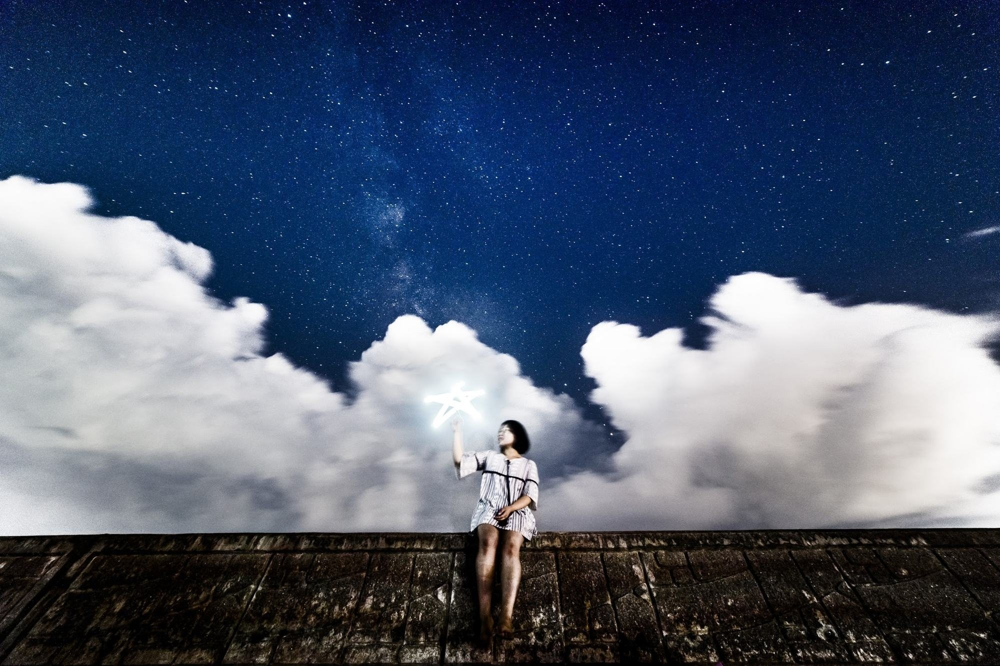
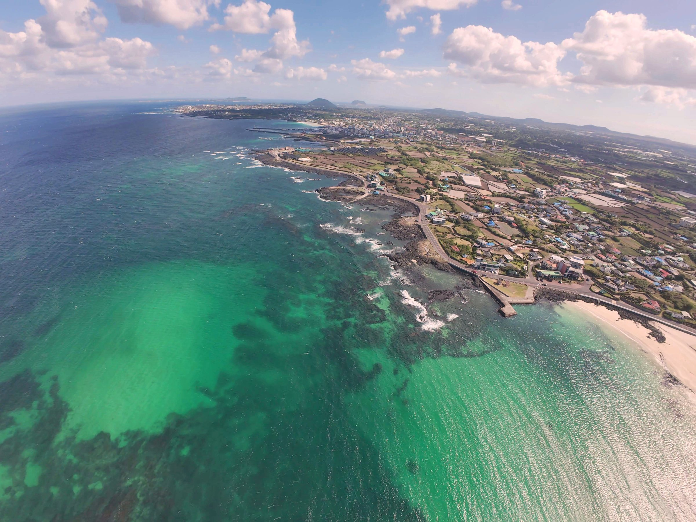

AIRAmedia
@jejugrapher제주사는 사람입니다.


숲과 바다, 하늘과 밤하늘에서 찍고 만든 것들을 한곳에 모았습니다. 생태관광·행사 기록, 드론·FPV, 360° VR, 별밤 사진, AI로 만든 영상과 음악까지 — 카드를 누르면 바로 재생됩니다.
제주의 숲·오름·습지·바다에서 열린 생태관광과 행사를 기록합니다. 기록 영상은 바로 볼 수 있고, 사진첩은 함께한 분들께 안내한 비밀번호로 열립니다.
제주사는 사람입니다.
시네마틱 드론과 FPV로 제주의 바다·하늘·오름·동굴을 날아다니며 찍습니다.

FPV 드론의 이미지 품질을 극한으로 밀어붙이는 채널입니다. 최신 FPV 드론 기술로 선명도, 디테일, 색감의 한계에 도전합니다. 특히, 인간의 눈이 가진 넓은 다이내믹 레인지(HDR)를 카메라에 구현하기 위해 노력
8K 360° VR로 담은 제주. 화면을 돌려 보면 그 자리에 서 있는 것처럼 느껴집니다.

제주의 바람, 바다, 한라산—
별이 빛나는 밤하늘과 빛으로 그린 그림 — 별밤사진관과 야간 촬영 기록입니다.

별이 빛나는 밤하늘,

Korean photographer.
AI를 도구 삼아 만든 뮤직비디오, 숏폼, 아이들을 위한 자장가와 동화, 시네마틱 다큐멘터리입니다.

🎬 AIRA-music | 당신의 하루를 위로하는 AI 감성 뮤직비디오

Welcome to AIRA-Shorts! "AIRA" stands for Artificial Intelligence Radiant Adventures. Join us as we explore the beauty

🌙 AIRA Lullaby - AI가 만드는 특별한 자장가 세상

만약 공룡이 멸종하지 않았다면? 쓸데없지만 미치도록 궁금한 질문들에 압도적인 AI 시네마틱 비주얼로 답합니다. 과학, 세계사, 한국 설화를 넘나드는 지식 다큐멘터리 큐리오에픽(CurioEpic)!
곧 첫 영상이 올라옵니다.